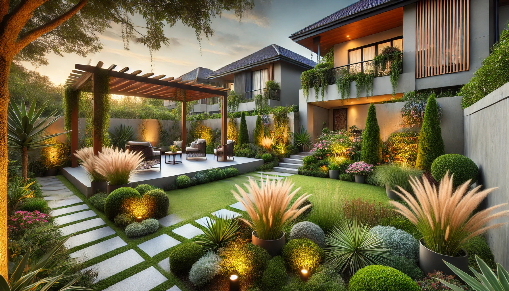

The Basics of Landscape Design
Master the fundamentals of landscape design with expert insights from Orange County's premier horticulturist.
Key Design Principles
Foundation Elements:
- Color harmony
- Balance and proportion
- Form and function
- Repetition and contrast
Design Considerations:
- Purpose and functionality
- Style selection
- Long-term growth planning
- Maintenance requirements
Understanding Purpose and Function
Before putting anything on paper or in the ground, it's crucial to understand your garden's purpose. Your outdoor space might serve as:
- A viewed work of art
- An extended living space
- An entertainment area
- A children's play area
- A quiet retreat for relaxation
Choosing Your Style
While there are various design styles to choose from (Italian, tropical, southwest, native), the best results often come from thoughtfully blending different styles to create a unique look that suits Orange County landscapes.
Layout and Planning
Hardscape First
- Begin with patios and walkways
- Define raised planters
- Plan ground-level planting areas
- Consider lawn space requirements
Plant Selection
- Privacy screening considerations
- Shade requirements
- Specimen tree placement
- Wall-softening vines
Long-Term Growth Considerations
One of the most common mistakes in landscape design is failing to account for long-term growth. In Orange County's typically small landscapes, using dwarf varieties whenever possible allows plants to reach their full beauty without outgrowing their space.
Plant Placement Strategies
- Group plants in threes or more
- Repeat groupings throughout the landscape
- Consider leaf shape and color contrast
- Balance "grassy" plants with broad-leaf varieties
Expert Tip
While these basics provide a foundation for landscape design, working with an experienced designer can help you avoid costly mistakes and create a truly exceptional outdoor space that might not have occurred to you otherwise.
Ready to Transform Your Landscape?
Let our expert team help you create the perfect outdoor space for your lifestyle.
Schedule a Consultation